Soy amante de los deportes al aire libre, vida hay una sola!!!... A disfrutar!!!
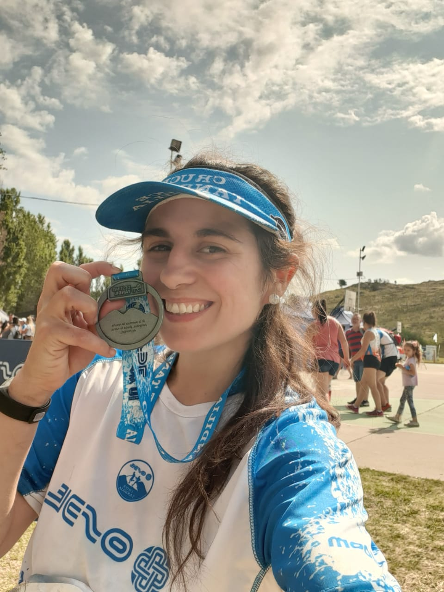
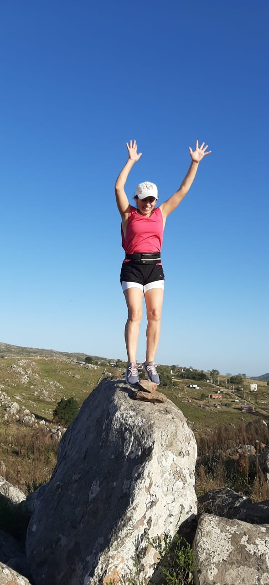
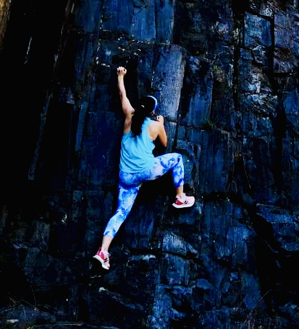
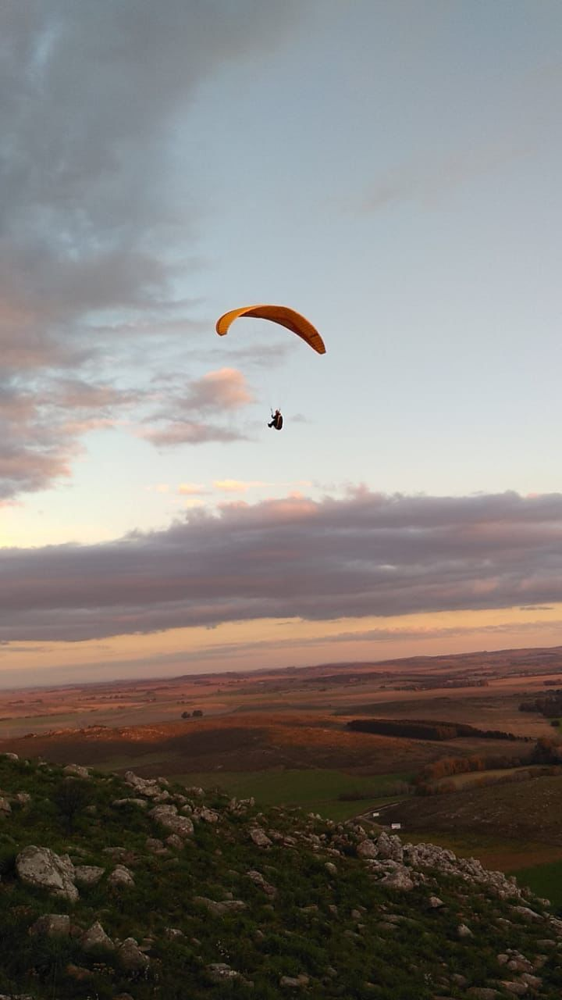
Soy rescatista de gatos, asilo gatos callejeros y les busco un hogar, es un trabajo muy gratificante
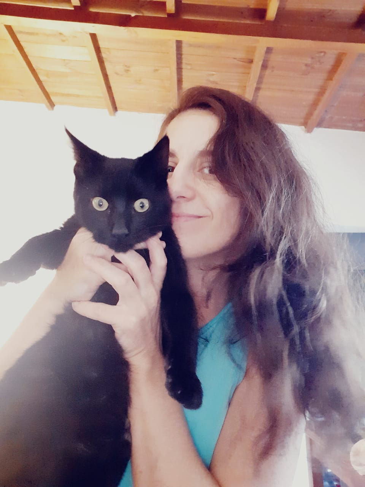
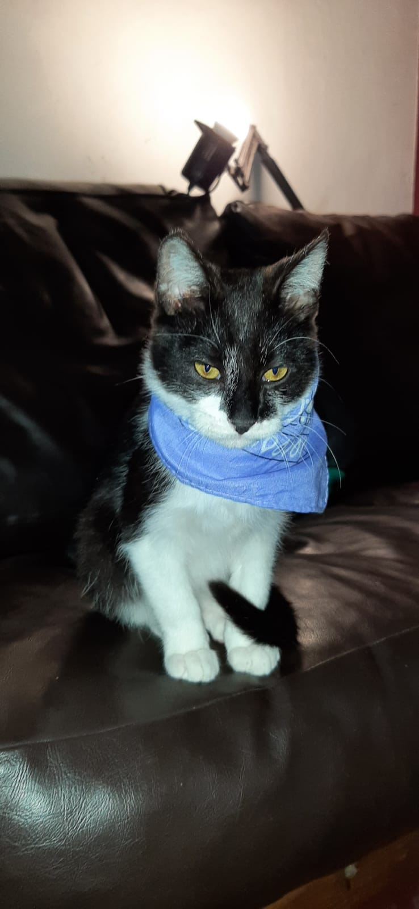
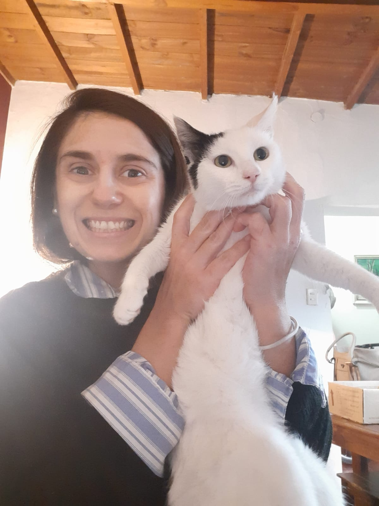
Amo la fotografía y la naturaleza

 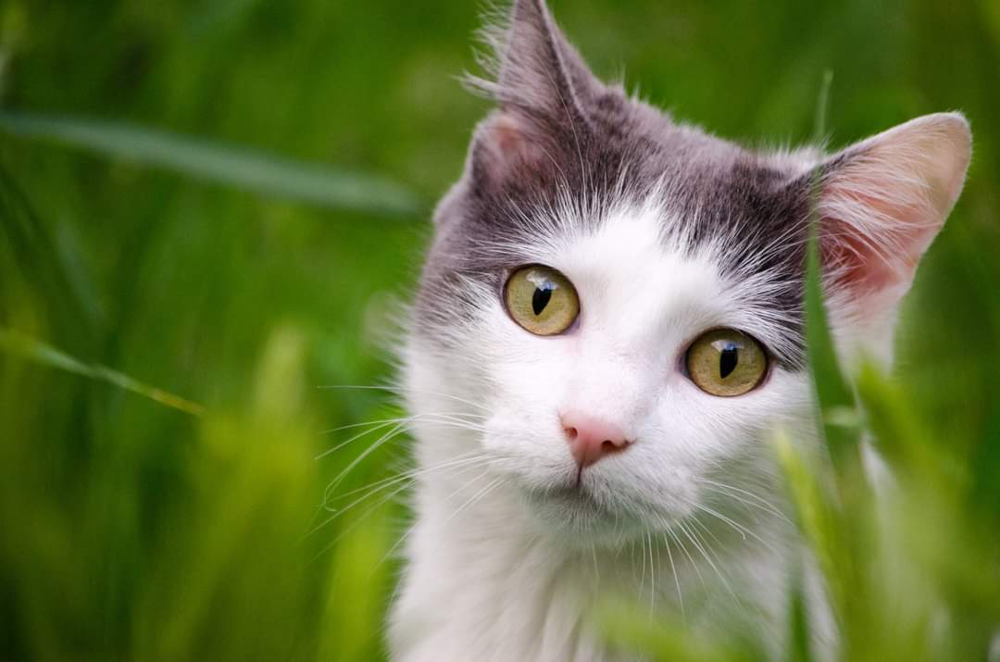
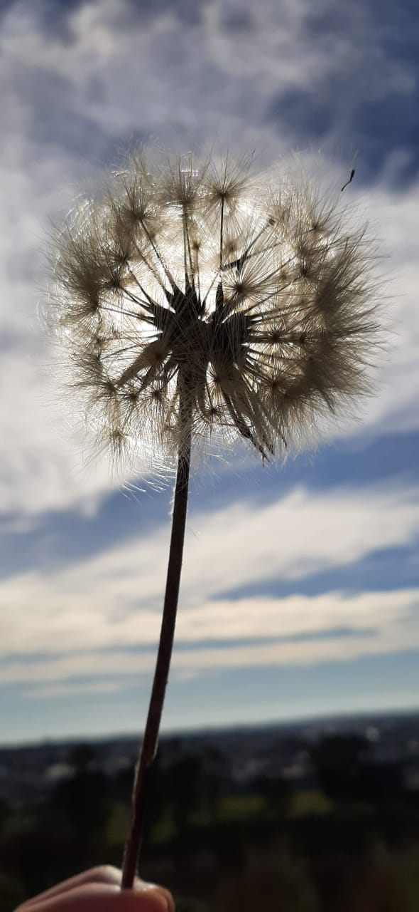
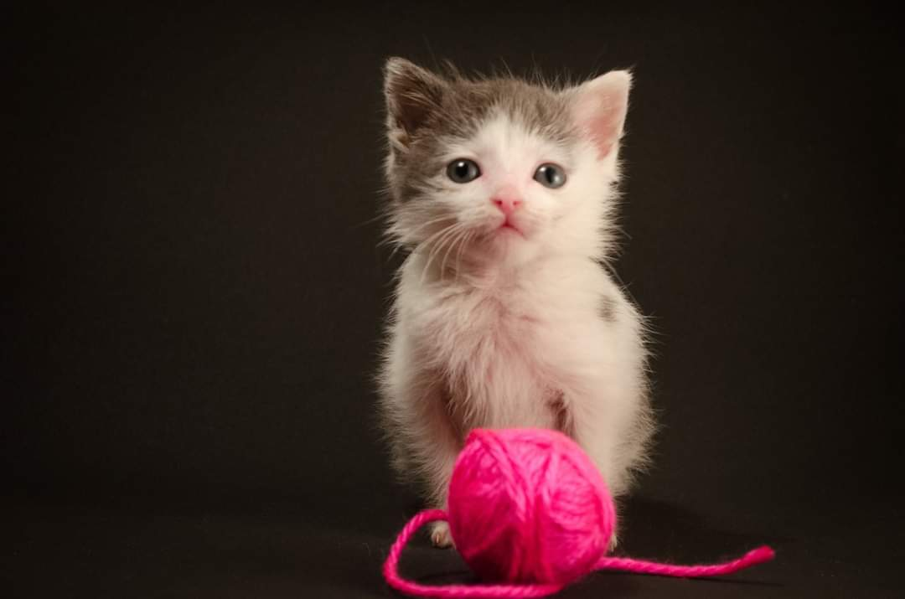
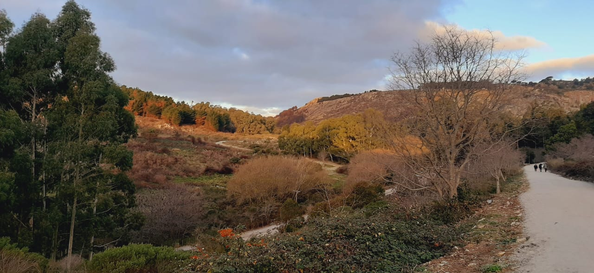
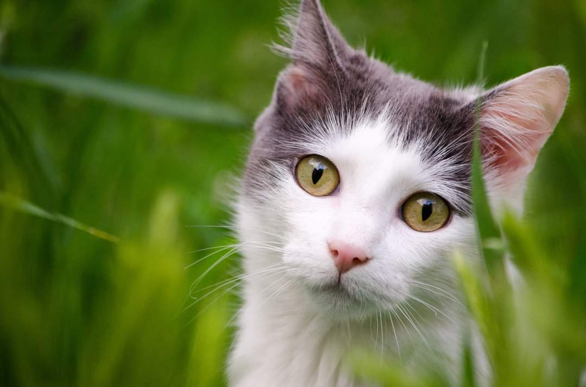
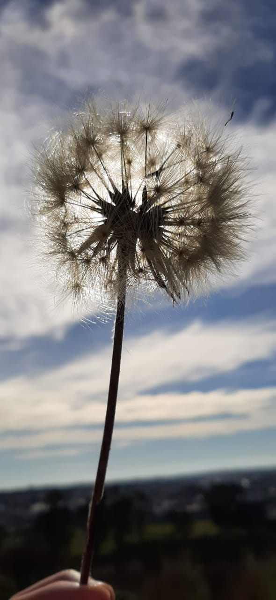
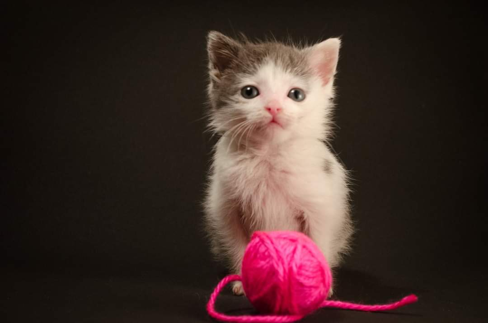
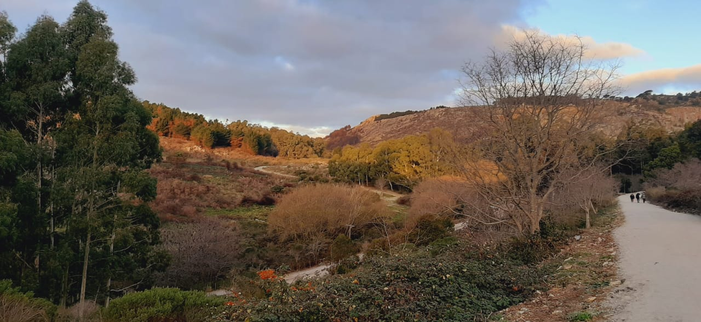